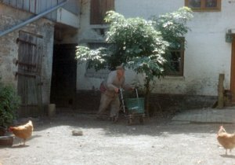

Aus einem Jahr der
Nichtereignisse
From a Year of Non-Events

Ann Carolin Renninger, René FrölkeDE 2017 – Super8 und 16mm auf HD – 83 min – Deutsch
B+K: Ann Carolin Renninger, René Frölke – S: René Frölke – P+V: joon Film
Ein verwitterter Hof im norddeutschen Angeln, sein ebenso verwitterter 90jähriger Bauer, Hühner, Katzen, pralles Obst auf den Bäumen und wucherndes Dickicht – eine Ode an die Einfachheit und Vergänglichkeit des Lebens, gefilmt auf Super8 und 16mm.
freitag 6 okt 20.30 uhr werkstattkino
Ann Carolin Renninger * 1979 in Flensburg. Studium der Kulturwissenschaften in Leipzig, Straßburg und Paris. Mitarbeiterin für die
Produktionsfirma Zero One Film, Berlin (Entwicklung und Produktion von Dokumentarfilmen). Gründerin von joon Film. AUS EINEM JAHR DER NICHTEREIGNISSE ist ihr Debüt als Regisseurin.
René Frölke * 1978 in der DDR.
Neben seiner Arbeit als freiberuflicher Cutter und Kameramann realisiert er seit einigen Jahren eigene Filmprojekte.
Filme Führung 2010 (6. UX) – Von der Vermählung des Salamanders mit der grünen Schlange 2010 – Le beau danger 2014